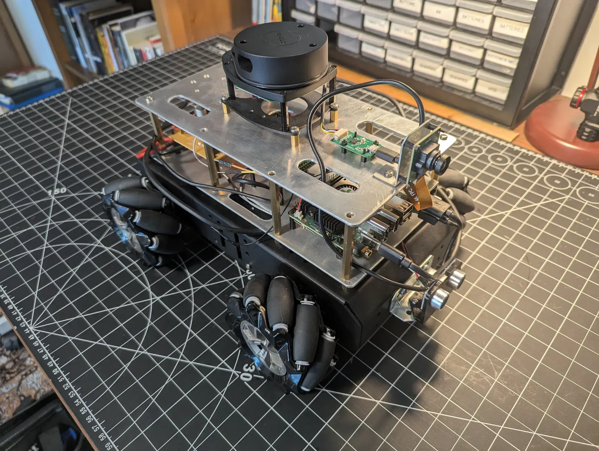
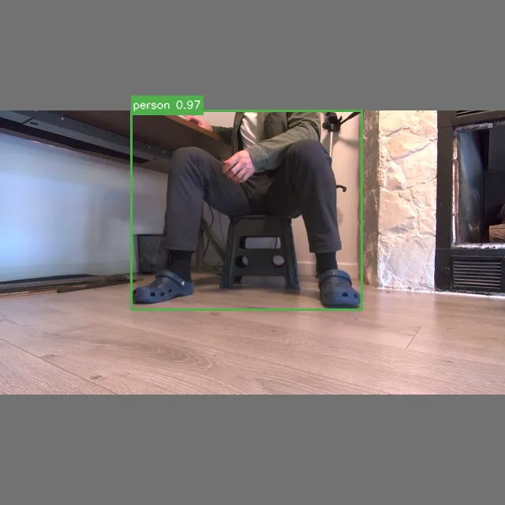
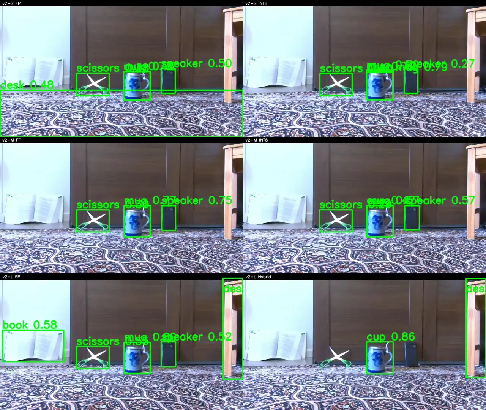

Omniseer¶
Physical edge-AI robotics for open-vocabulary perception, bounded behavior, and reproducible evidence. Omniseer runs a native V4L2/RGA/RKNN perception path on a ROCK 5B+ (RK3588), connects detections to deliberately bounded target acquisition and framing, and preserves the artifacts needed to review what occurred on the robot. ROS 2 carries the runtime contracts; the engineering focus is the edge-to-physical-system boundary.
The implemented behavior is intentionally narrow: scan for a configured class, acquire a stable detection, center it, make bounded framing adjustments, and stop at a configured proximity limit. It is not navigation-based object search, room-scale exploration, or a claim of general autonomy.

Evidence-backed studies¶
-
Target acquisition on the physical robot

A public v2-L FP RunBundle records first detection at 25.4 s, terminal
framedsuccess at 56.1 s, 2.64 FPS mean consumer throughput, 380.25 ms RKNN inference p50, and zero target-loss episodes. -
Six-detector deployment trade-off

In one controlled scene, v2-M FP led coverage at 41.7%. Across six independent physical case studies, v2-S INT8 reached the highest observed throughput at 16.54 FPS; v2-M INT8 was the strongest observed coverage/throughput compromise for this scene.
-
INT8 failure localized, not hidden
Recalibrated v2-L INT8 retained 0 of 1,301 FP detections in the final 300-frame RK3588 evaluation. TD01 mixed precision recovered 60.6%, locating the failure in the classification/projection path without presenting the hybrid as production-ready.
System at a glance¶
Camera -> V4L2 / RGA / RKNN inference -> normalized detections -> bounded acquisition + framing
| |
+-> performance telemetry +-> terminal evidence
|
RunBundle -> offboard review
The mission-critical path stays on the robot: camera capture, preprocessing, RKNN inference, post-processing, command arbitration, robot I/O, and bounded behavior. Operator dashboards, preview streaming, reports, and analysis remain optional diagnostic or review tooling.
Explore the system architecture Browse the engineering documentation
Results with evidence boundaries¶
The three studies above are deliberately different kinds of evidence: one complete public physical RunBundle, one fixed-source controlled replay plus six independent physical-run summaries, and one frozen-frame quantization investigation. They support their named claims—not general detector accuracy, replicated benchmarks, or broad autonomy assertions.
For the artifact inventory, public-versus-local distinction, CI scope, and reproducibility limits, see Verification Evidence. The source studies retain the detailed methodology, provenance, and limitations.